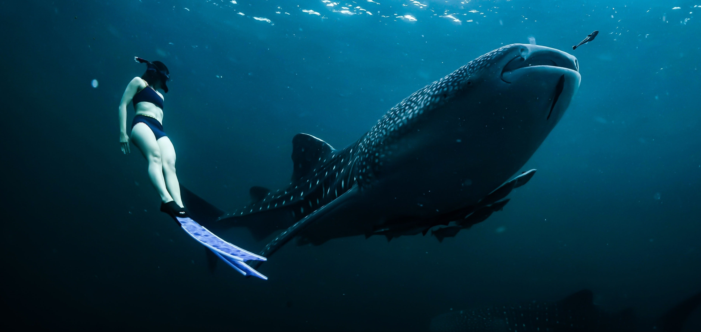
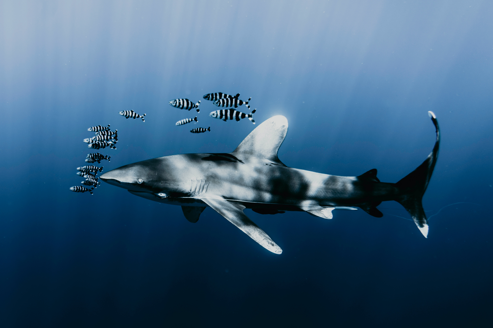

Tubarões são seres incríveis que existem a mais tempo que os dinossauros, com anos de evolução e diversas espécies. Um tipo de tubarão muito interessante e que vemos bastante em livros e filmes é o tubarão-martelo, e imagino que você já se perguntou sobre o formato da cabeça deles. Os tubarões-martelo tem a cabeça no formato de um martelo, como o próprio nome explica, ela ajuda a dar sustentação e compensam as nadadeiras peitorais que são pequenas. Como possuem os olhos em cada lado da cabeça, ao balançá-la os tubarões conseguem uma visão muito melhor.
O tubarão-baleia é o maior peixe da Terra! Ele possui 15 metros de comprimento, e só a sua boca possui 1,5 metro de um lado ao outro, seu peso é de 15 toneladas. O tubarão-baleia é do tipo filtrador, ou seja, ele se alimenta de plânctons que captura com sua enorme boca nadando pelos oceanos. Ele também possui uma beleza indiscutível, com suas belas manchas brancas pelo corpo lembrando estrelas.
A AIAT é o Arquivo Internacional de Ataques de Tubarão, ele é responsável por contabilizar e verificar os ataques ocorridos de forma detalhada e verificada por cientistas desde 1500. Ela é gerenciada pela Sociedade Americana de Elasmobrânquios e pelo Museu de História Natural da Florida. As informações contidas nesse site foram retiradas do livro “Tubarões” da autora Miranda Smith.